1st Time Soldering! / Clock!
On my first day of soldering, I must admit, I was quite tired! This, coupled with the fact that it was my first time soldering meant that I had a bit of a slow start on the soldering process. Initially, I had been heating up the solder and attempting to melt it onto the metal junctions of our digital clock. This method did not work for me well, as it often led to imprecision, not enough, or too much solder. Something I knew that I would want to avoid was crossing over, because at the rate that I was going, I did not want to risk creating a short circuit. During our next day of soldering, I had made a considerable improvement in my soldering skills and was able to finish that day. So what was it that so drastically increased my efficiency? Well, this time around I was heating up the prongs sticking out the back of our digital clock BEFORE I applied solder. My soldering now looked way cleaner than it had before, which was not only good for the look of the board, but also for its proper functioning. Despite this improvement in my soldering abilities, I still had some minor frustrations along the way. Of these frustrations was making sure that the electronic components would lay flat against the board as I soldered them together. I solved this by using a helping-hand, and bending the prongs of my electronic components such that they would hold in the position which I had intended for them. Another frustration was having to work around the various metal holes throughout the board. Due to their close proximity to one another, I had to make my best attempt at being as precise as I could. This was mostly just a matter of practice. The last issue I faced (albeit it wasn’t too big of an issue) was placing the same amount of solder at each prong-to-metal junction. This required the occasional use of a solder pump or the reapplication of solder. In the end, I was able to cut out the unnecessary metal wire sticking out from the back of the board, and connect it to a battery. It worked on the first try! Now, I just needed to permanently connect the battery holder to the white wire that plugs into our clock. Using some wire cutters, I gently removed the insulation from the edges of battery-holder wires, then wrapped them around the end of the exposed white wire. I then soldered the wire ends together and sealed them off using electric tape.
Starting Up:

Almost Done:
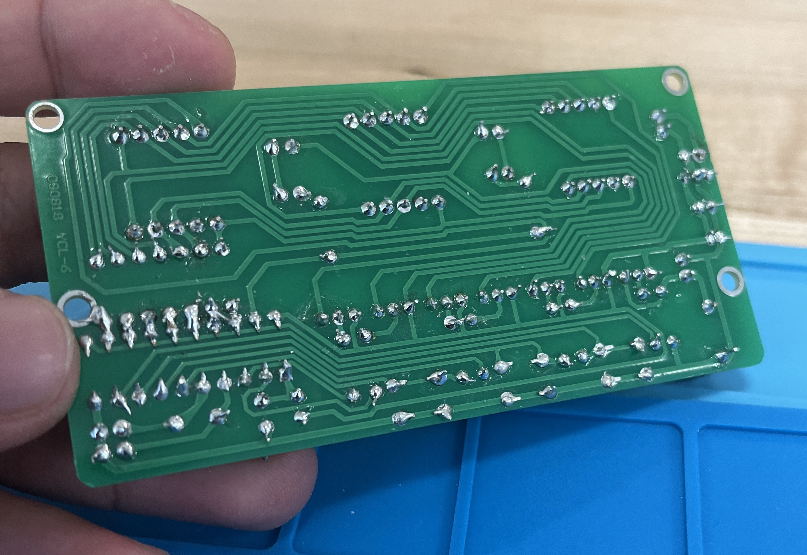Works!:
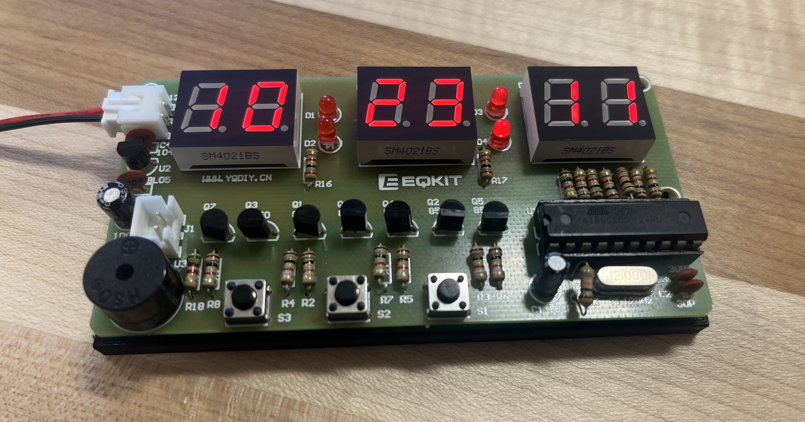
Overall, I found this process to be quite therapeutic. I did burn myself once, unfortunately, but this was no obstacle! I kept going while listening to some tunes and learned that I am more capable of soldering than I had thought initially. I learned to have patience and confidence in my abilities, and that over time (in this case, a class and a half, haha) these qualities can bring about wonderful results!
Schematics
Here are some schematics I drew for the four 4 iterations of the alarm enclosure we would eventually print. The schematics that embody these iterations have a rather simplistic look to them, focusing largely on providing a snug fit to the electronic components of our clock. The first of our prints was merely a dummy print used to test fittage on the face of our clock. This print only took about 40 minutes to print, which was the aim for all our iterations minus the last print, which took about 4.5 hours. Surprisingly this first iteration lined up rather nicely with the buttons and number-panels of the clock.
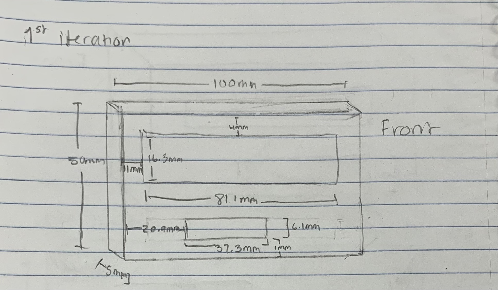The second iteration of our enclosure was created to act as a test fit for the entire body of the clock. This iteration also came out nicely, although there were still some minor improvements to be made.
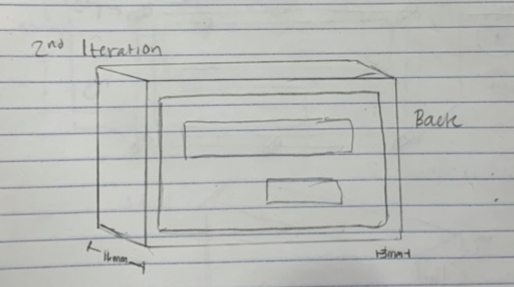Of these improvements, was the addition of an opening to plug in a power supply, and the enlargement of the small rectangular opening on the face of our clock. The purpose for the enlargement of this opening was to make it easier for the user to press the small buttons of the clock. Previously, the buttons were almost impossible to press (unless you are me and have small fingers, of course! hahaha).
 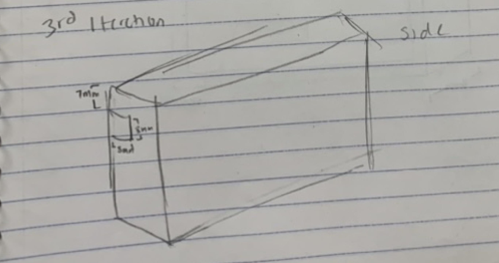
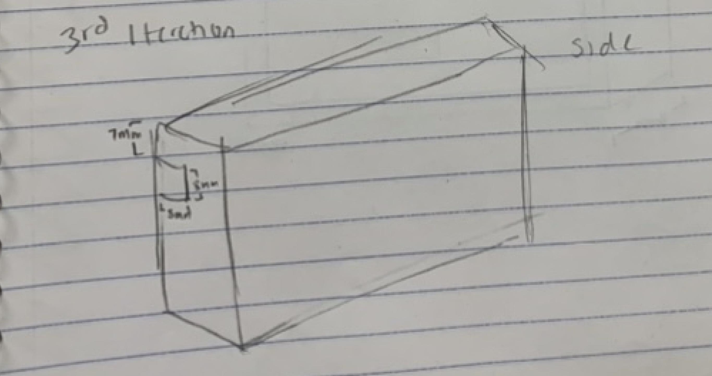
Our fourth and final iteration of our clock was made to provide a back and attachment sites to connect the front portion of our enclosure. Unfortunately, the 6 pegs sticking out the front portion of our enclosure were not all that structurally sound. Promptly after attempting to connect the front and back portions to one another, every single one of the pegs broke! It was a rather tragic outcome for our “final” iteration, but in the end, it was really all okay!!!
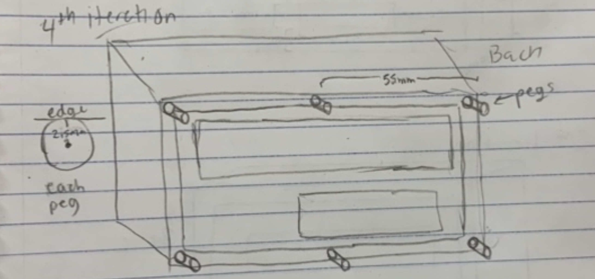
We learned something new today and that was that we need to make the pegs thicker! Of course, this would also mean that we’d need to increase the thickness of the walls to accommodate for the pegs, and accordingly adjust the sizes of the holes for attachment. Other improvements we would’ve liked to have made include making button covers to improve user friendliness and accessibility, and the addition of a larger enclosure around our small enclosure (we’ll talk about this in a sec)...
Measurements
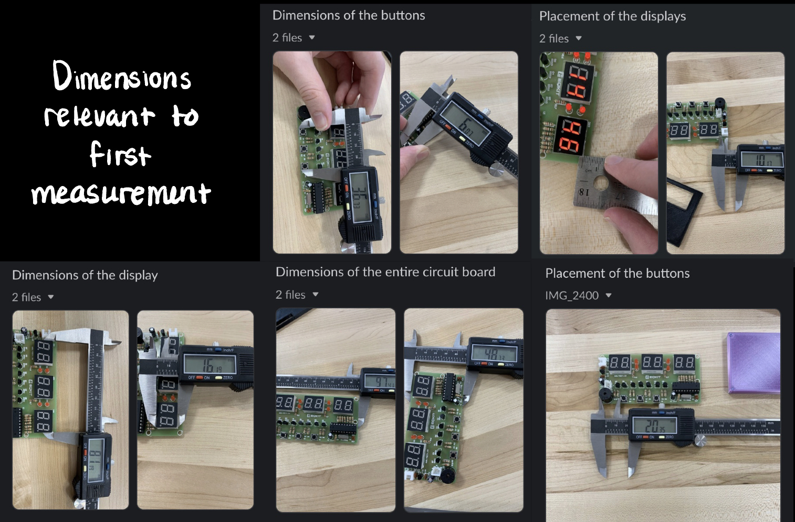 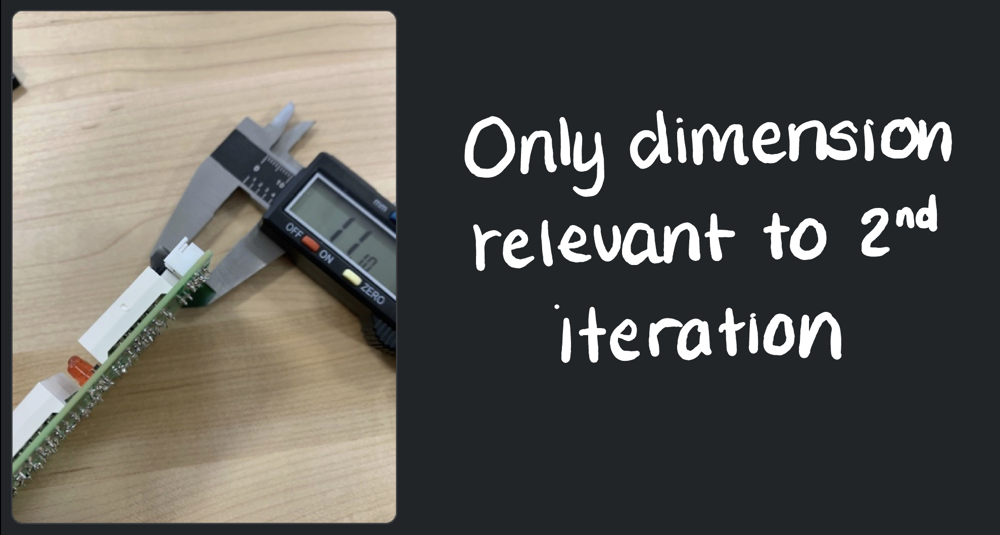 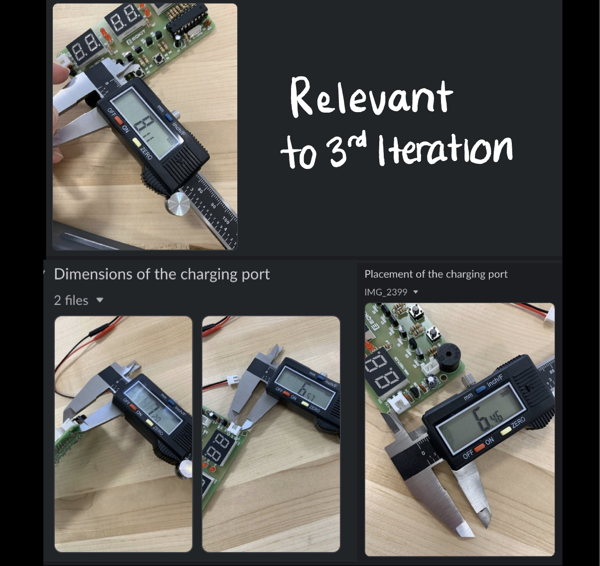Overall, while our design stayed rather simple, I learned a substantial amount about how iteration can facilitate the process of troubleshooting and design, even if the steps to get there are rather small!
Bread, Why do you Tantalize Me?!?
Ultimately, we wanted to encase our clock in the bread design, as it seemed like the most easy-to-implement and fun out of the bunch. After making my sketch for the case, I downloaded a bread stl file off Thingiverse and got to work. The first problem was an inconsistency between the sizes of our bread enclosure and the size of the smaller case holding the electronic components of our clock in place. By comparison, the bread looked huge! I scaled the bread to around the same size as the smaller case, then rotated and translated the case such that the buttons of our clock would stick outward from the side of the bread. After doing this, I noticed that it probably would be difficult to have the clock face in this orientation without it falling out. At first we thought of sealing the back of our smaller case completely. The only problem with this was getting the clock inside this case in the first place! We then thought to cut out a rectangular hole from the bottom of the bread casing and slip the clock into the small case from there. The problem with this solution was that gravity would pull the clock right out again! Due to time constraints, this plan was unfortunately a miss and we decided to forgo this design shown here:
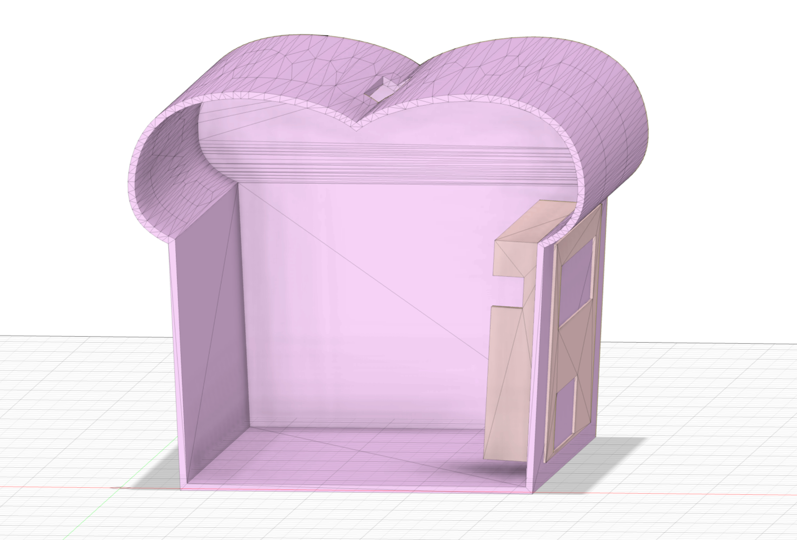Fusion 360
Of the problems that caused us the most frustration, Fusion 360 was responsible for all of them! In particular, constraints and selection tools were of particular difficulty. While this is most likely the result of some mistake on our part, we could not identify what that mistake was, and why the selection tool on either of our laptops was so finicky. It seemed as though it would only sometimes select those sketches that we had identified, which was terrible for our efficiency. The problem that had mostly been confined to my partner, was that of constraints. Unfortunately, we are both battling to fully understand this Fusion 360 functionality. In the meantime, my partner opted to focus on creating a simplistic Fusion 360 sketch that would satisfy the needs of a working enclosure (as opposed to some of the complex designs of some of our classmates). I must mention however, that I have always been a minimalist in my approach to life and design, so I say less is more!
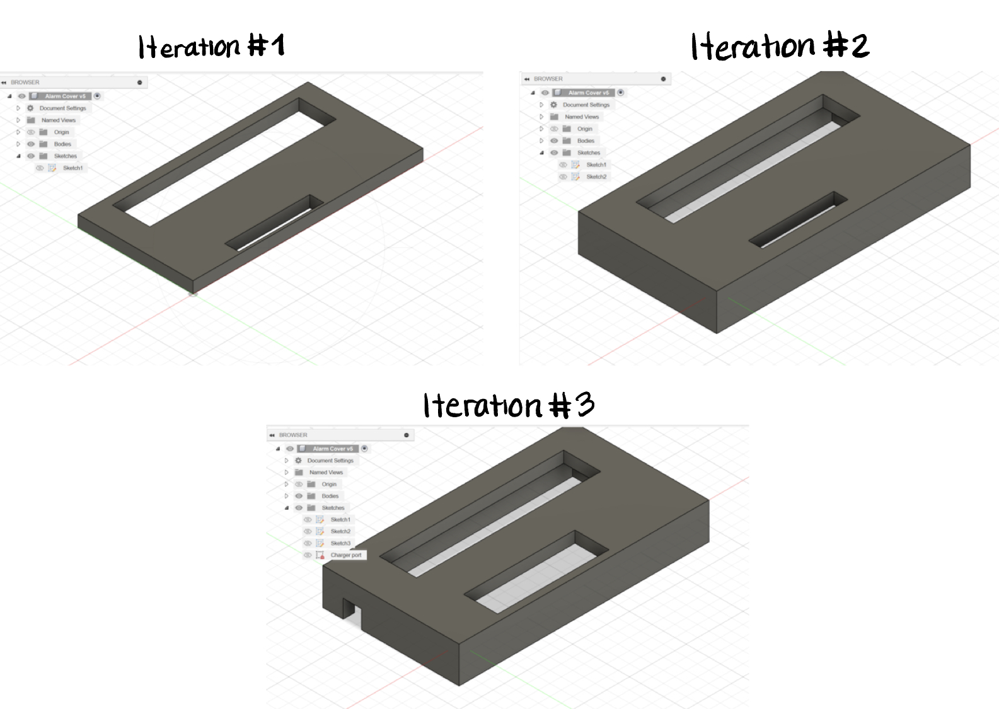 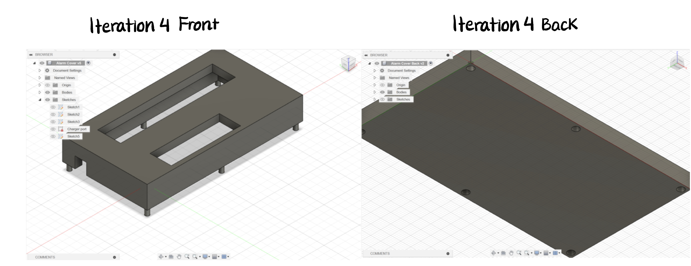PrusaSlicer
As mentioned briefly, our first print took only about 40 minutes to print, which was the aim for all our iterations except the last print, which took about 4.5 hours. With the exception of our last print, the reason we had aimed for short print times was because we recognized these iterations to be prototypes that primarily served to identify and tackle only a few problems at once. Handing too many problems in one iteration would have proven very frustrating, and if we had chosen to take that route, it is likely we wouldn’t have finished in time. That being said, none of our prints took more than 5 hours to print, which for most projects is relatively reasonable. Otherwise, some settings we changed in Prusa to reduce print time, included an increased Z-lift value and a only about 10% infill. On the contrary, the cause for our final iteration’s significant change in print time was Prusa’s “QUALITY” print settings, which were necessary to ensure peak stability and structural integrity.
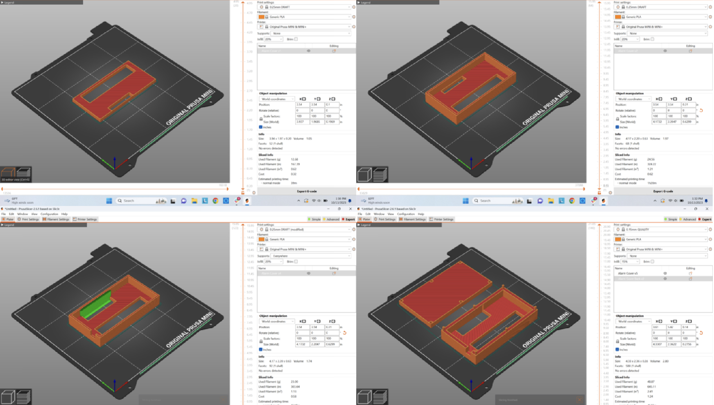 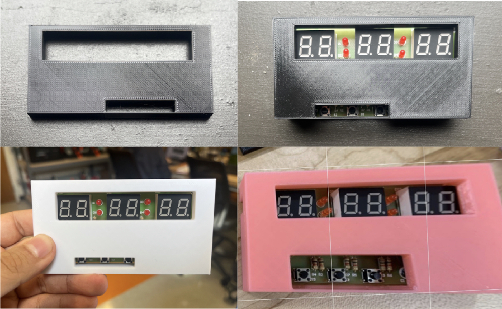
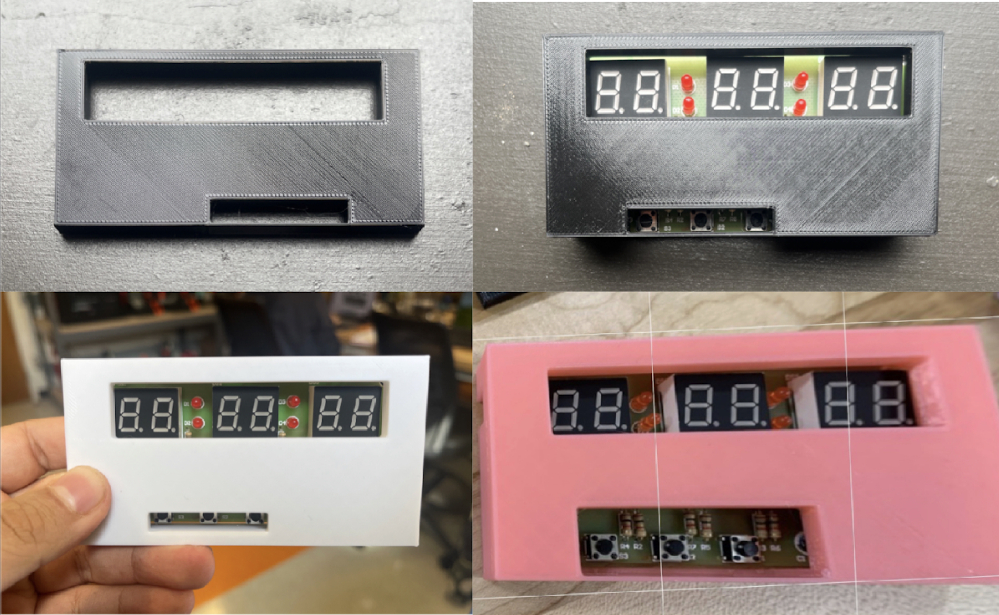

To Conclude
This project has been a real journey, highlighting the importance of persistence and adaptability in the face of challenges. From the initial struggles with soldering to the iterative design process and the complexities of using Fusion 360, each step underscored the value of continuous learning and improvement. Despite moments of frustration, the experience emphasized the significance of patience, teamwork, and the willingness to embrace trial and error as integral parts of the learning process.
Project 7
Our clients are dogs suffering from paralysis in their hind legs. Due to Brandeis’ animal testing policy, we are unable to work with individual animal clients. Luckily we were able to obtain a wheelchair that gives dogs with hind-leg paralysis the ability to walk again! Based on personal experience with physically handicapped dogs, my partner and I were able to identify an issue that occurs when they attempt to sleep in their wheelchair. Without prior modification to said wheelchair, the position they fall into is one characterized by an arched back and suspended hind legs, which – for obvious reasons – is rather uncomfortable. To solve this problem, my partner and I came up with the solution of adding “front legs” to the wheelchair apparatus. These front legs support a tired dog’s frame by effectively eliminating the issue of an arched back and allowing their functional (front) limbs to rest. The legs accomplish this task by remaining in a suspended state until the dog chooses to rest, at which the wheelchair’s rigid legs impede any slouching or stooping position of the wheelchair (and therefore the dog).
Wheelchair we're working with:

Needs Statement:

Design Features and Iteration:
Of the various design feature which we discussed, the ones we intend to implement (or have already implemented) included:
• A 180 degree rotation mechanism for the legs of the wheelchair. The intent of this implementation is to allow for specific leg-to-floor angle calibration for dogs of various sizes, or alternatively as a way of engaging or disengaging the “leg” mechanism. Currently (3rd iteration), this mechanism is implemented via a screw. The leg rotates at the head of the screw, and the threaded body is driven into a hole of a 3D printed component made as a separate wheelchair attachment. Note that this “other” attachment is merely a way of connecting the legs to the body of the wheelchair. We’ll talk about this more in-depth later.
Iteration 1 (1st gen rotation mechanism displayed:

• The second feature we addressed (and one which works hand-in-hand with the first) is a locking mechanism for the aforementioned angle adjustment. The intent of this design choice was to be able to lock the angle in place even as the pressure on the legs (brought upon by the dog’s weight) fights to shift the angle. We have a crude prototype of this mechanism, which is displayed below, however, this feature has proven deceivingly difficult to implement despite multiple proposed solutions. The problem with most of our proposed solutions is that they are very complicated, would require multiple disjointed components, and would also be rather large (perhaps too large for most dog’s comfort). As of now, the mechanism we have in use is inspired by a medicine bottle’s child-lock mechanism. This mechanism works by automatically assuming a “locked” position in which rotation is made near impossible. It is only until horizontal pressure is applied to this point that the mechanism will “unlock” and enable rotation. This way, rotation will only occur when it is desired by the dog-owner. Some issues we are having with this solution include its size and limited angle choices. Despite being the most compact of the prototypes for this particular mechanism, it has still proven to be too large. We hope to be able to shrink this component to resolve this issue, although this process itself has its own limitations. Of these limitations, the ability to implement more internal “hooks” that add locations for the angle to remain locked becomes very difficult. This is because these hooks take up space, therefore making implementation into a smaller body a challenge. The strength of these hooks is also worrisome, although if we get to the point of implementing them, a material change could help resolve this problem. Note: this second feature is relevant to the 2nd generation (skipped in the 3rd) and will hopefully resume implementation in the 4th, if feasible.
"Open" Position

"Closed" Position

If this mechanism doesn’t work out, we were thinking about taking inspiration from one of these two Lego technic pieces. The good thing about these is that they change angles in discrete intervals. The only issue is that while these can withstand moderate force without turning it's likely not enough to prevent a motion caused by the torque that a dog’s weight imparts. If we can use this mechanism and somehow prevent this movement then it will likely bring the best quality outcome.
Alternative Inspiration:

• The third design choice that we implemented are feet made of ninja-flex. Originally, the plan was to use a pinball plunger mechanism, although Alex and I decided that (at least for now) the more easy-to-implement and cost effective alternative would be the ninja-flex feet. Because of Ninja-flex’s aptly advertised flexibility, it was a great alternative for supplying “cushioning” for our wheelchair. Note: this feature is relevant to the 3rd and 4th generation models

• This 4th design choice was briefly mentioned at the end of the first, although it is less of a “feature” than it is a necessity for connecting the components of our prototype together. This component assumes the shape of two cradled “open” boxes. The inner box is made of ninja flex and has the sole purpose of “hugging” the horizontal protrusions at the front end of the wheelchair. Unlike standard PLA, Ninja-flex’s malleable nature allows this “hugging” to occur. If not for this small but very intentional choice, the box would slip right out from the horizontal protrusion. The other, slightly larger, box fits right around the smaller one and has the purpose of maintaining a rigid shape that is suitable for drilling into and allowing for smooth rotation. Note: this feature is relevant to the 3rd and 4th generation models.
Inner Box:

Outer Box(s):

In the 1st and 2nd generation models, there was only one box. This box was made entirely out of Ninja-flex, although we decided to follow through the changes described above after observing that in “hugging” the horizontal protrusions the box began to warp. Other than not looking very pleasing to the eye, this warping hindered smooth movement of the leg about the axis of rotation (a small nib that was part of the Ninja-flex body).
• The last design choice is a telescoping rod that allows for adjustable leg length. The implementation of this feature is still up in the air, although it is hopefully easy to implement and something we can accomplish very soon. The idea is to have two hollow rectangular prisms that fit snugly into one another and lock in place via a small cylindrical rod. More specifically, each rectangular prism has regularly interspaced holes that allow for the small cylindrical rod to fit through. Once this rod is pushed through 4 aligned holes (2 on each opposing side of the telescoping rod) the leg length will lock. Remember, either side of the telescoping rod has two layers – The outer and inner layers each of which is a hollow rectangular prism with holes on opposing sides). To prevent the small cylindrical rod from slipping out the 4 holes, there will be caps on either side. One of the caps will be removable to allow for insertion. There will also be a string attached to one end of the small cylindrical rod. The end of the string that is not attached to the rod will tie around a currently undecided location on the body of the wheelchair. This string will prevent loss of this small cylindrical piece. Note: this feature is relevant to the 4th iteration model.
Iteration 3 Fusion360 Leg File:

Iteration 3 Leg Print:

Here are some images our evolving design Plans:
Iteration 1 sketches:

Iteration 2 angle lock mechanism ideas and planning:

Iteration 3 and 4 sketches (adjustments made incrementally):

Ultimately, our measurement of success was dependent on each feature’s complexity / ease-of-implementation, and ability to accomplish a predetermined goal. In the majority of cases, the more complex the solution resulted in more problems. Despite starting off with rather complex solutions, simplifying not only made implementation easier but also tended to work better than their complex counterparts. This result, of course, is surprising, although equally as surprising was the fact that these deceivingly simple solutions were not evident at the forefront. Instead, we had to work pretty diligently to get to these places – it’s funny how things work out. Our second measure of success was dependent on a given feature’s ability to accomplish a predetermined goal. This “capability” is defined on a spectrum and determined by observation. If we take the example of the original Ninja-flex box, we observed that while it technically accomplished our predetermined goal, it was only able to do so with mediocre results. This compelled us to come up with a solution that was higher up the spectrum of capability, which was described above. All changes made as a result of this process were done in a CAD or CAM. Any simplification (or occasional complexification) was made in a CAD. Changes made in material were addressed in a CAM, often requiring a different 3D printer and swapping of filament material.
Overall, the iteration that brought us the most insights was the 1st. This iteration immediately inspired changes in material for the “box” bodies, an improved rotation mechanism, and was the catalyst for a lot of iterative design sketches. These sketches are pictured here:
Result:

Concluding Thoughts:
In conclusion, our journey in addressing the unique challenge of providing comfort to dogs with hind-leg paralysis through a modified wheelchair has been a testament to the iterative nature of design. The process began with a clear needs statement, emphasizing the occupational therapy task of alleviating discomfort during rest. Our focus on simplicity and ease of implementation led to the development of key features such as a 180-degree rotation mechanism, a locking mechanism for angle adjustment, ninja-flex feet for cushioning, and a telescoping rod for adjustable leg length. Despite initial complexities, our pursuit of effective solutions resulted in unexpected but impactful simplifications. Each design choice underwent careful observation and refinement, with changes executed in both CAD and CAM environments. The 1st iteration played a pivotal role, inspiring material changes, an improved rotation mechanism, and serving as a catalyst for iterative design sketches. As we move forward, the fusion of creativity, practicality, and a commitment to the well-being of our canine clients remains at the core of our design philosophy.